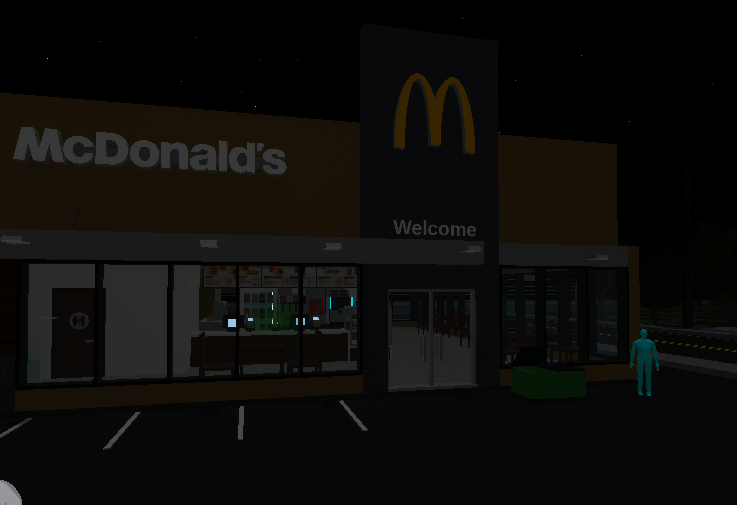
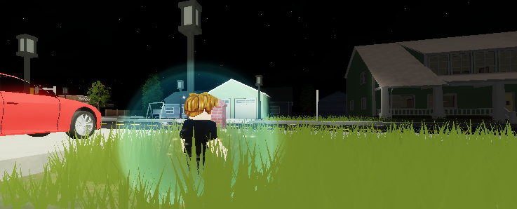
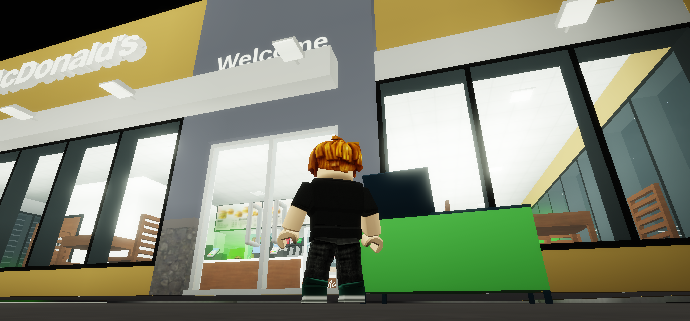
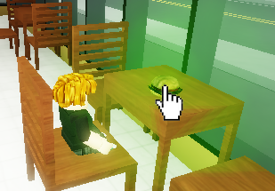
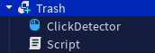
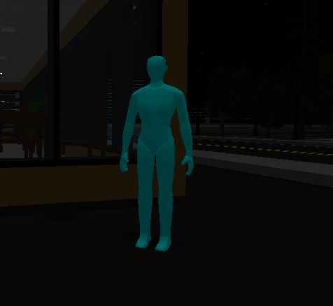
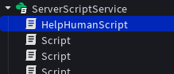
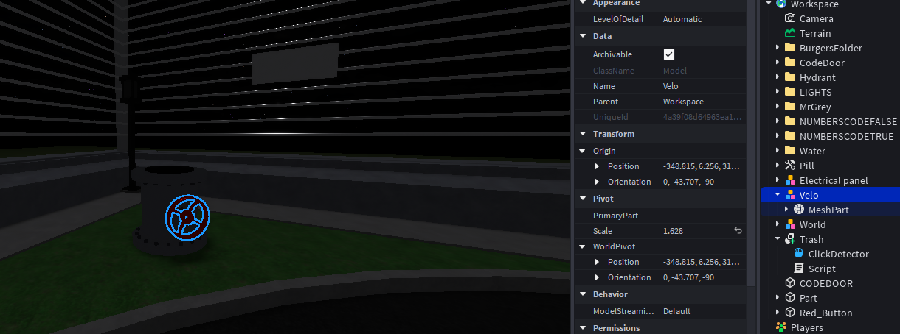
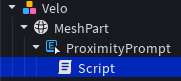

Операция «Спасение города»: свет, бургеры, жители, гидранты и ворота
🚨
Операция «Спасение города»
На город обрушилась таинственная «Бургерная чума». Свет погас, улицы залиты водой из сломанных гидрантов,
жители превратились в серые статуи MrGrey, а повсюду валяются испорченные бургеры BadBurger.
Ты — агент-программист. Твоё оружие — GetChildren(): команда, которая берёт всех детей папки разом
и позволяет чинить город циклом, а не по одному объекту.
📖 История миссии
Глава 1. Город во тьме
Чума началась с кухни бургерной: рецепт испортили, и «BadBurger» разлетелся по всему району.
Сначала погасли фонари — в папке LIGHTS десятки ламп, и вручную включать каждую слишком долго.
Нужен цикл по GetChildren().
Глава 2. Опасный мусор
Люди продолжают носить плохие бургеры в рюкзаке. У мусорки Trash стоит ClickDetector:
если набрать 5+ BadBurger и кликнуть — скрипт проверит рюкзак через GetChildren() и уничтожит их все.
Глава 3. Спасение людей
Жители застыли серыми статуями MrGrey. В ServerStorage лежит модель здорового человека Noob,
а в рюкзаке у героя — таблетка Pill. Скрипт HelpHumanScript перебирает всех MrGrey,
и при клике со статуей (если есть Pill) ставит клона Noob на место статуи, а статую удаляет.
Глава 4. Потоп
Гидранты в папке Hydrant бьют фонтанами, лужи в папке Water заливают улицы.
На рычаге Velo есть ProximityPrompt: нажал E — выключил частицы у всех гидрантов и удалил всю воду.
Глава 5. Ворота наружу
Последний рубеж — кодовые блоки в папках NUMBERSCODEFALSE и NUMBERSCODETRUE.
Кнопка Red_Button сдвигает и поворачивает все блоки разом. Город спасён — путь открыт!
🎯 На этом уроке ты:
поймёшь, зачем нужен GetChildren() и чем он отличается от FindFirstChild
научишься двум циклам: pairs и for i = 1, #list
включишь свет во всём городе одной командой
очистишь рюкзак от BadBurger и спасёшь жителей MrGrey → Noob
починишь гидранты и откроешь ворота через группы объектов
Этап занятия
Время
Что делаем
История + теория
15 мин
GetChildren, циклы, Backpack, Clone/Destroy
Задание 1 — Электричество
10 мин
Цикл по папке LIGHTS
Задание 2 — Испорченные бургеры
12 мин
GetChildren рюкзака + Trash
Задание 3 — Спасение людей
14 мин
HelpHumanScript: MrGrey + Pill → Noob
Задание 4 — Сломанные гидранты
12 мин
Hydrant / Water + ProximityPrompt
Задание 5 — Открытие ворот
12 мин
NUMBERSCODEFALSE / TRUE
Творчество + опрос
10 мин
Своя механика и проверка
Итого
~85 мин
—
🗺️ Карта урока «Бургерная чума»
Скачай готовую карту и открой в Roblox Studio: File → Open from File.
В Roblox всё — дерево: у Workspace есть дети (дома, папки), у папки — свои дети (лампы, статуи).
GetChildren() возвращает таблицу всех прямых детей родителя. Не внуков — только один уровень вниз.
local objects = game.Workspace.Model:GetChildren() -- objects = { Part1, Part2, Script, ... } print(#objects) -- сколько детей
🔍 GetChildren vs FindFirstChild
Команда
Что делает
Когда нужна
GetChildren()
Все дети → таблица
Включить 20 фонарей, удалить всю воду
FindFirstChild("Имя")
Один ребёнок по имени (или nil)
Найти Pill, ClickDetector, Noob
💡 В миссии спасения оба приёма нужны вместе: GetChildren() — список статуй, FindFirstChild — таблетка и клик.
🔄 Два способа пройтись по таблице
1) pairs — удобно, когда не важен номер:
local list = workspace.Folder:GetChildren() for i, v inpairs(list) do print(v.Name) -- v = объект end
2) for i = 1, #list — когда нужен индекс (как в заданиях с гидрантами и воротами):
local list = workspace.Folder:GetChildren() for i = 1, #list do
list[i].Transparency = 0.5 end
🎒 Backpack — рюкзак игрока
player.Backpack хранит Tools. Через GetChildren() можно перебрать все предметы,
через FindFirstChild("Pill") — быстро проверить одну вещь.
if player.Backpack:FindFirstChild("Pill") then print("Есть лекарство!") end
🧬 Clone и Destroy — спасение статуй
Чтобы «превратить» MrGrey в человека:
Запомнить позицию статуи
Destroy() — убрать статую
Clone() модели Noob из ServerStorage
Поставить клон на ту же позицию (SetPrimaryPartCFrame)
local pos = primaryPart.Position
v:Destroy() local newNoob = noobModel:Clone()
newNoob.Parent = workspace
newNoob:SetPrimaryPartCFrame(CFrame.new(pos))
⚠️ У модели Noob должен быть назначен PrimaryPart, иначе SetPrimaryPartCFrame не сработает.
📡 GetService и события
game:GetService("ServerStorage") — безопасный доступ к сервису.
Для клика — ClickDetector.MouseClick:Connect, для клавиши E — ProximityPrompt.Triggered:Connect.
🤖
Спроси Алису (ИИ-помощник)
Нажми на вопрос — Алиса ответит тебе прямо сейчас!
💬 Нажми на любой вопрос — откроется Алиса с готовым ответом.
📁 Получение объектов
game.Workspace.Folder:GetChildren()
Вернёт таблицу со всеми объектами внутри папки Folder.
🔄 Цикл для таблицы
for i, v inpairs(list) do
Где i — это номер, а v — сам объект.
🎒 Доступ к рюкзаку
player.Backpack:GetChildren()
Позволяет проверить, какие предметы у игрока.
🛠️ Изменение свойств
v.Transparency = 0.5
Или v:Destroy() для удаления объекта.
💡 Задание 1 — Включи электричество
В городе отключили свет. Все объекты, отвечающие за свет, находятся в папке LIGHTS внутри Workspace. Тебе нужно пройтись по всем этим объектам и включить их.
Создай скрипт (Script) в любом месте, например, в ServerScriptService.
Используй GetChildren() для папки game.Workspace.LIGHTS.
С помощью цикла включи свет у всех объектов.

Выполнено шагов: 0 из 3
local lightFolder = game.Workspace.LIGHTS -- Находим папку local lights = lightFolder:GetChildren()-- Получаем все объекты
for i, light inpairs(lights) do
light.PointLight.Enabled = true-- Включаем свет у каждого end

💡 Команда light.PointLight.Enabled = true включает прожектор, если он находится внутри объекта-родителя.
🍔 Задание 2 — Очисти город от плохих бургеров
На карте есть мусорка (Trash) с детектором клика (ClickDetector). Когда игрок нажимает на неё, скрипт должен проверить, сколько у него в рюкзаке предметов BadBurger. Если их 5 или больше, все они должны исчезнуть.

Открой объект Trash и открой внутри него скрипт.
Создай переменную, которая считает количество бургеров.
В событии нажатия используй цикл, чтобы перебрать рюкзак игрока и посчитать бургеры.
Собери все плохие бургеры и выбрось в мусорку

Выполнено шагов: 0 из 4

local trash = script.Parent local clickDetector = trash.ClickDetector
clickDetector.MouseClick:Connect(function(player) local badburgers = 0 local backpackItems = player.Backpack:GetChildren() -- Считаем количество плохих бургеров for i, v inpairs(backpackItems) do if v.Name == "BadBurger"then
badburgers = badburgers + 1 end end
if badburgers >= 5then for i, v inpairs(backpackItems) do if v.Name == "BadBurger"then
v:Destroy()-- Удаляем найденный бургер из рюкзака end end print("Все плохие бургеры удалены!") end end)
🤖 Задание 3. Спасение людей
Серые статуи MrGrey — это жители города. В ServerStorage лежит модель Noob (здоровый человек),
а лекарство — предмет Pill в рюкзаке. Скрипт перебирает всех детей папки MrGrey через GetChildren()
и при клике со статуей (если есть Pill) ставит клона Noob на место статуи.
Открой HelpHumanScript в ServerScriptService:

В переменной serverStorage подключи серверное хранилище ServerStorage.
В переменной noobModel найди модель Noob.
В переменной mrGreyModels укажи все объекты в папке MrGrey (GetChildren()).
Создай цикл, который будет перебирать все объекты mrGreyModels.
Напиши условие для проверки имени модели (MrGrey).
Создай переменную для поиска ClickDetector.
Проверь, есть ли у модели MrGrey компонент ClickDetector.
Создай функцию, которая будет срабатывать при взаимодействии с ClickDetector.
Удали модель MrGrey после создания копии Noob.
Проверь: клик по MrGrey с Pill → появляется Noob, статуя исчезает.
Выполнено шагов: 0 из 3

local serverStorage = game:GetService("ServerStorage") local noobModel = serverStorage:FindFirstChild("Noob") local mrGreyModels = game.Workspace.MrGrey:GetChildren()
for i, v inpairs(mrGreyModels) do if v.Name == "MrGrey"then local clickDetector = v:FindFirstChild("ClickDetector") if clickDetector then
clickDetector.MouseClick:Connect(function(player) local char = player.Character if char then local humanoidRootPart = char:FindFirstChild("HumanoidRootPart") if humanoidRootPart and noobModel then local primaryPart = v.PrimaryPart ifnot primaryPart then
primaryPart = v:FindFirstChildWhichIsA("BasePart") end if primaryPart then local spawnPosition = primaryPart.Position
v:Destroy() local newNoob = noobModel:Clone()
newNoob.Parent = workspace
newNoob:SetPrimaryPartCFrame(CFrame.new(spawnPosition)) end end end end) end end end
💊 Чтобы превратить статую обратно в человека, освободи руку и нажми на статую.
🚿 Задание 4. Сломанные гидранты
Гидранты затопили улицы. На рычаге Velo → MeshPart есть ProximityPrompt и Script.
Нужно через GetChildren() выключить частицы у всех объектов папки Hydrant
и удалить все объекты папки Water.

Открой скрипт в рычаге:

В переменной hydrant укажи путь до папки Hydrant и получи все объекты.
В переменной water укажи путь до папки Water и получи все объекты.
В переменной Proximity укажи путь до ProximityPrompt.
Создай функцию, которая срабатывает при взаимодействии с ProximityPrompt.
Перебери все объекты папки Hydrant и выключи генератор частиц.
Перебери все объекты папки Water и удали их из игры.
Выполнено шагов: 0 из 3
local hydrant = game.Workspace.Hydrant:GetChildren() local water = game.Workspace.Water:GetChildren() local Proximity = script.Parent.Parent.ProximityPrompt
Proximity.Triggered:Connect(function(player) for i = 1, #hydrant do
hydrant[i].ParticleEmitter.Enabled = false end for i = 1, #water do
water[i]:Destroy() end end)
Если ParticleEmitter лежит глубже внутри гидранта, используй: hydrant[i]:FindFirstChildWhichIsA("ParticleEmitter").Enabled = false
🚪 Задание 5. Открытие ворот
Финал спасения: кнопка Red_Button сдвигает кодовые блоки.
Папки NUMBERSCODEFALSE и NUMBERSCODETRUE содержат все детали ворот —
снова работаем группами через GetChildren().
Добавь Script к кнопке Red_Button (рядом с ProximityPrompt).
В переменной button укажи путь до ProximityPrompt.
В num1 получи все объекты папки NUMBERSCODEFALSE.
В num2 получи все объекты папки NUMBERSCODETRUE.
Создай функцию на нажатие кнопки (Triggered:Connect).
Перебери num1: сдвинь Position и задай Orientation.
Перебери num2: сдвинь Position и задай Orientation.
Смени цвет кнопки на случайный.
Выполнено шагов: 0 из 3
local button = script.Parent.ProximityPrompt local num1 = game.Workspace.NUMBERSCODEFALSE:GetChildren() local num2 = game.Workspace.NUMBERSCODETRUE:GetChildren()
button.Triggered:Connect(function() for i = 1, #num1 do
num1[i].Position = num1[i].Position - Vector3.new(5, 1, 1)
num1[i].Orientation = Vector3.new(0, -90, -45) wait() end for i = 1, #num2 do
num2[i].Position = num2[i].Position + Vector3.new(5, 1, 1)
num2[i].Orientation = Vector3.new(0, -90, -45) wait() end
button.Parent.BrickColor = BrickColor.Random() end)
Если папки на карте названы иначе (например без буквы S), подставь точные имена из Explorer.
🎉 Молодец! Ты отлично поработал — город спасён с помощью GetChildren().
🎨 Творческое задание — Придумай свою механику
Используй GetChildren() для своего проекта. Собери несколько объектов в одну папку в Workspace и запрограммируй их изменение. Например:
🎨 Сделай кнопку, которая меняет цвет сразу у всех домов в городе.
🤖 Совет: Не бойся экспериментировать! GetChildren() работает с любыми объектами. Попробуй изменить не только положение, но и свойства Transparency, Material или Color.
🧩 Быстрая проверка: выбери правильные карточки
1. Что делает команда GetChildren()?
Показывает все объекты, которые находятся внутри другого объекта.
Создаёт новые объекты в игре.
Удаляет все объекты в игре.
2. Как правильно написать функцию GetChildren() для папки Model?
local objects = game.Workspace.Model:GetChildren()